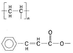

|
|
|
| Ana
Sayfa | Önceki Sayfa |
Sonraki Sayfa |
|
Ek
Bilgi > Fotopolimerler:
Fotopolimer, ýþýk enerjisine
maruz kaldýðýnda kimyasal reaksiyona uðrayarak mekanik
ve kimyasal yapýsý deðiþen bir tür polimerdir. Fotopolimerler
cinslerine göre deðiþik dalgaboyundaki ýþýklarda aktive
olurlar. Ayrýca ýþýðýn gücü ve süresine baðlý olarak
maruz kaldýðý enerji miktarý kür seviyesini deðiþtirir.
Bu teknolojiyi kullanan otoinþa cihazlarýnda genellikle
görünmeyen dalga boylarýnda kýzýlötesi (Ultra Violet,
UV) ýþýk kaynaklarý kullanýlmasýna raðmen, görünür dalgaboyundaki
ýþýk ile aktive olabilen fotopolimer inþa malzemelerini
kullanan modeller de üretilmiþtir.
|
|
Tarihçe
ve kullaným alanlarý:
Saðda, doðal fotopolimer malzeme ("bitumen of Judea",
Suriye'de çýkan bir tür ince asfalt veya katran) kullanýlarak
yapýlmýþ bir fotoðraf plakasý üzerine saatlerce düþen
bir götüntüyle elde edilmiþ Dünyanýn ilk fotoðrafý görülmektedir.
(Nicephore, Fransa / Chalon, 1826)
Nicephore, ayný fotopolimer malzemeyi maatbaacýlýkta
resim çoðaltmakta da kullandý: bakýr bir plaka üzerine
ince bir tabaka Suriye katraný sürüp ardýndan üzerine
yaða batýrýlarak þeffaf hale getirilmiþ resimli kaðýt
konularak güneþ altýnda bekletiliyordu. Resmin þeffaf
kýsýmlarý ýþýðý geçirerek ardadaki kaplamanýn kür olmasýný
saðlýyordu. Kür iþlemindne sonra plaka yýkanýyor ve
sadece resmin siyah kýsýmlarýnda plakanýn üzeri katran
kaplý kalýyordu. Ardýndan bu plaka asit içerisinde bekletiliyor
ve kür olmuþ Suriye katraný ile korunmayan tüm bölgeler
biraz oyuluyordu. Böylece matbaa presinde kullanýlabilecek
uzun ömürlü bir baský plakasý elde edilmiþ oluyordu.
Matbaa baský plakalarýnýn
üretiminde fotopolimer kullanýmý o günden sonra sürekli
artýþ göstermiþ ama kýsa sürede Suriye katraný yerine,
ýþýða karþý daha hassas ve kür olduktan sonra çözünmeye
karþý daha yüksek dayanýmlý olan dikromatlý jelatin
(dichromated gelatin) kullanýlmaya baþlanmýþtýr.
1930'lu yýllarda ise geliþen kimyasal sentez teknolojileri
yardýmýyla dikromatlý jelatinden çok daha iyi sentetik
fotopolimerler geliþtirilmiþtir; Bunlarýn ilki ise Eastman
Kodak Firmasý'ndan Louis Minsk'in geliþtirdiði poly(vinyl
cinnamate) formüllü fotopolimerdir.
Matbaacýlýkta
bakýr plaka kullanýmý ise yerini, zaten bilinen bir
baský tekniði olan Litografi (lithography)'ye
býrakmýþtýr; Bu teknikte, alçý taþýndan yapýlmýþ ve
yüzeyi parlatýlmýþ plakalar üzerine dikromatlý jelatin
sürülür ve çoðaltýlmasý istenen resmin negatifiyle maskelenerek
yüzeye ýþýk verilir. Iþýk gelen kýsýmlar kür olup alçý
taþýna yapýþýr, diðer bölgeler ise yýkanarak temizlenir.
Kaplama yýkandýktan sonra plaka üzerine koyu kývamlý
bir mürekep sürüldüðünde mürekkep sadece fotopolimer
kalpamanýn olmadýðý taþ yüzeyine tutunarak baský sýrasýnda
istenen resmin pozitif olarak kaðýda aktarýlmasýný saðlar...
Kýsa bir süre sonra ise alçý taþý plakalarýn yerine
günümüzde hala offset baskýda kullanýlan gözenekli
alüminyum silindirler almýþtýr.
Litografi, fotopolimerlerin
matbaacýlýkta kullanýldýðý tek yöntem deðildir; Serigrafi
(serigraphy) tekniðinde ipek veya benzeri þekilde
ince dokunmuþ bir kumaþa fotopolimer emdirildikten sonra
üzerine çoðaltýlacak resmin negatifiyle maskelenerek
ýþýk düþürülür. Kür iþleminden sonra kumaþ yýkandýðýnda
sadece ýþýk düþmemiþ bölgeler gözenekli kalýr, diðer
kýsýmlar ise mürekkebi geçirmeyecek hale gelir. Daha
sonra elde edilen bu "kumaþ mürekkep maskesi"
kaðýt ile mürekkep kaynaðý arasýna yerleþtirilerek mürekkebin
kaðýt üzerinde istenen nokatalara geçmesi saðlanýr.
Serigrafi tekniði günümüzde küçük kapasiteli baský iþlerinde
hala kullanýlmaktadýr... Fotopolimer
malzemeler matbaacýlýk haricinde boya, kaplama ve yapýþtýrýcý
amaçlý da kullanýlmaktadýrlar.
Iþýkla baþlatýlan polimerizasyon
(photoinitiated polymerization) istenilen malzeme özelliklerine
ulaþýlmasýný da saðlar; Reaksiyona baþlayacak reçinedeki
monomer ve diðer kimyasallar ayarlanarak reaksiyon sonrasýndaki
sertlik, renk, çözünürlük, geçirgenlik, yapýþkanlýk
gibi özellikler ayarlanabilir. Bu sayfanýn sonunda verilen
firmalarýn yaptýðý birçok araþtýrma sonucunda ise Stereolitografi
(stereolithography)
isimli otoinþa tekniðinde kullanýlacak ve kür olduktan
sonra birçok farklý özelliðe sahip fotopolimer reçineler
geliþtirilmiþtir. Uzun vadede, kür olduktan sonra günümüzde
kullanýlan birçok plastiðe muadil özelliklere sahip
olacak fotopolimer reçineler geliþtirilebilir.
Fotodegradasyon
(photodegradation) ise fotopolimerizasyonun aksi bir
þekilde üretilen plastiklerin güneþ ýþýðý altýnda zamanla
bozulmasýnýn ardýnda yatan mekanizmadýr. Ýlk sentetik
plastikler güneþ ýþýðýna karþý yeterince dayanýklý deðiller
ve zamanla mukavemetlerini kaybediyorlardý. Sonralarý
yapýlan birçok araþtýrmayla kýzýlötesi ýþýða karþý stabilizatör
katkýlar (photostabilizers) geliþtirilmiþtir.
Sonuçta,
gerek fotopolimerizasyon gerek ise fotodegradasyon sanayide
önemli yer tutan konulardandýr ve fotokimya alanýnda
birçok çalýþma yapýlmasýna sebep olmuþ ve olmaktadýrlar...
Aþaðýda,
fotopolomier kimyasýný açýklayacý ve konuya giriþ niteliðinde
bir yazý bulunmaktadýr:
|
|
Polimer
Kimyasý:
Fotopolimerleri anlayabilmek için öncelikle polimer
kimyasýný anlamak gereklidir. Çünki fotopolimer kýsaca
ýþýkla büyüyen bir tür polimerdir:
Polimerin
tanýmý ve özellikleri:
Polimer ismi,
Yunanca'da -birçok parçasý olan- anlamýnda "polymerés"
kelimesinden Ýngilizce'ye (polymer) olarak geçmiþtir.
Polimer, monomer adý verilen tekrarlayan moleküllere
sahip bir kimyasal maddedir.
Solda:
En basit polimer örneði polietilen (polyethylene) dir.
Polietilen, etilen (ethylene) ismi verilen monomerden
oluþmuþtur. Etilen hafif bir gaz olmasýna raðmen polietilen,
þiþe ve diðer ambalaj malzemelerinin üretildiði sert
bir plastiktir. Polietilen molekülleri büyük olduðu
için katý haldedir ve bu uzun molekküller birbirine
geçerek mukavemeti arttýrdýðý için saðlam bir malzeme
oluþtururlar.
Polimerizasyon
(polimerler nasýl büyürler):
Genel
olarak polimer zincirlerinin büyümesi 3 safhadan oluþur:
- Baþlangýç:
Çoðunlukla ýsý, ýþýk veya kimyasal uyarý ile basit
moleküllerin (initiator) bölünerek reaktif türe dönüþmeleri.
- Yayýlma:
Monomerler ile tekrarlanan reaksiyona giren reaktif
türlerin zincir oluþturmasý.
- Sonlanma:
Yayýlmayý
durduran bir koþulun oluþmasý.
Bu
çerçeve içinde olmak þartýyla birçok farklý polimerizasyon
oluþumu bulunmaktadýr. Bunlardan bazý örenkler, radikal
(radical), yoðunlaþma (condensation) ve katyonik (cationic)
polimerizasyondur. Radical polimerizasyon en çok fotopolimerlerde
en çok karþýlaþýlan mekanizmadýr. Katyonik polimerizasyon
ise CMET ve 3D Systems tarafýndan kullanýlan epoksi
(epoxy) tabanlý fotopolimerlerdeki kür mekanizmasýdýr.
Bunun radikal polimerizasyona olan üstünlüðü, oksijen
tarafýndan reaksiyonun engellenmemesidir.
Çapraz
baðlanma (cross linking) ile yüksek mukavemet:
Önceki
paragraflarda açýklandýðý gibi polimerler uzun moleküllerden
oluþur ve bu moleküllerin birbirlerine dolaþmasýyla
malzemenin mukavemeti artar. Fakat sýcaklýk yükseldikçe
moleküller arasýndaki kayganlýk artar ve mu mukavemeti
önemli ölçüde düþürür. Bunu önlemek için moleküllerin
birbirleri arasýnda belli noktalardan baðlanmasý gerekir:
Solda,
birbirlerine dolanmýþ molekül zincirleri, saðda ise
çapraz baðlanmýþ molekül zincirleri þematik olarak gösterilmiþtir.
Çapraz baðlanma sonucunda baðýmsýz polimer molekülleri
birleþerek dev moleküller oluþtururlar. Epoksi ve vulkanize
olmuþ kauçuk (vulcanized rubber) çapraz baðlanmýþ polimerlere
verilebilecek en iyi bilinen iki örnektir. Ham kauçuðun
piþirilerek vulkanize edilmesi sýrasýnda moleküller
çapraz baðlanarak yüksek sýcaklýk dayanýmýna sahip bir
polimer malzeme oluþtururlar. Çoðunlukla kemer tokalarý
ve diðer tekstil aksesuarlarý yapýmýnda zamak, tutya
gibi düþün sýcaklýkta eriyen metaller piþirilmiþ kauçuk
kalýplara merkazkaç altýnda dökülürler. Vulkanizasyon
sonrasý kauçuk bu döküm sýcaklýk ve basýncýna dayanýklý
hale getirilmiþtir.
Monomer
olarak polimerler (oligomer):
Bazen bir molekülü oluþturan monomerlerin kendisi de
daha küçük monomerlerden oluþmuþ bir polimer olabilir.
Bu durumda, monomer görevi gören polimerlere oligomer
denir. Oligomer, Yunanca "küçük polimer" anlamýna
gelmektedir.
Çapraz
baðlama ise oligomerlerden oluþan bir polimerizasyon
olarak düþünülebilir.
Fotopolimerler:
Fotopolimer, molekül büyümesi için gerekli gücü ýþýk
enerjisiyle alan bir tür polimerden ibarettir. Fotopolimer
reçinenin temel yapý taþý monomerdir. Iþýða maruz kaldýklarýnda
oluþan kimyasal reaksiyonla bu monomerler birleþerek
polimer moleküllerini oluþtururlar. Sývý haldeki bir
fotopolime reçine polimerizasyon sonrasýnda çok uzun
ve aðýr moleküllere sahip olduðundan katý hale geçer.
Karmaþýk bir þekilde birbirlerine dolanmýþ bu molekülleri
birbirlerinden ayýrmak çok zor olduðu için, kür olmuþ
fotopolimer sert ve çözücülere karþý dayanýklý bir yapýya
sahiptir. Otoinþa cihazlarýnýn çoðunda
inþa malzemesi
olarak kullanýlan ham (kür olmamýþ) fotopolimer oda
sýcaklýðýnda sývý haldedir fakat (Denken/SolidJet)
gibi katý fotopolimer kullanan bir cihaz da vardýr.
Burada, þeffaf ve katý haldeki fotopolimer ýþýkla kür
olduktan sonra sýcaklýða ve çözücülere karþý dayanýklý
hale gelir.
Iþýkla
baþlatýlan radikal polimerizasyon:
(bu bölüm yapým aþamasýndadýr)
|
Çapraz baðlanmýþ Polyvinyl
|
Fotokroslink
(Photocrosslinking), Iþýkla çapraz baðlanma:
|
Cinnamic
asit:
|
|
|
Truxinic
asit:
|
veya
|
Vinyl:
|
 |
Poly(vinyl
cinnamate):
|
|
|
Cinnamoyl:
|
|
|
Fotopolimer
reçine üreticileri:
-
Vantico
(www.vantico-aandt.net):
Eski ismi Ciba Speciality Chemicals olan Vantico,
yýllarca 3D Systems ile ortak ürün geliþtirme çalýþmalarý
yaptýktan ve pazarlamayý 3D Systems aracýlýðý ile
sürdürdükten sonra Þubat 2002'de anlaþmayý bozarak
pazarlamayý direkt yapmaya baþlamýþtýr. Artýk sadece
Japonya'da Vantico ürünleri 3D Systems üzerinden
pazarlanmaktadýr. Vantico, AlliedSignal Firmasý'nýn
fotopolimer ürünlerini de bünyesine katmýþtýr.
Vantico,
Stereocol isimli, renklendirilebilir bir
fotopolimer reçine serisini de üretmektedir. Belli
bir seviyenin üzerinde UV (kýzýlötesi) ýþýmaya maruz
kalan reçine þeffaf bal renginden mor renge dönmektedir.
Ýmalat sonrasý güneþ ýþýðýndaki UV sebebiyle tüm
modelin renk deðiþtirmesini önlemek için model yüzeyi
UV bariyer görevi yapan özel bir vernikle kaplanýr.
Stereocol orijinal olarak, (daha sonralarý ismi
Avecia Specialty olarak deðiþtirilen) Ýngiltere
tabanlý Zeneca firmasý tarafýndan geliþtirilmiþtir.
Vantico, Nisan 2001'de Avecia'dan Stereocol serisini
satýn almýþtýr. Stereocol baþlýca medikal
modellemede kullanýlmaktadýr.
-
RPC
(www.rpc.ch):
Baðýmsýz ürün geliþtiren bu Ýsviçre firmasýný 2002
baþýnda 3D
Systems satýn almýþ ve 23 Nisan 2002 tarihi
itibarý ile SLA sistemleri için fotopolimer reçineleri
Accura markasý altýnda satýþa baþlamýþtýr.
-
DSM
Somos (www.dsmsomos.com):
Eski DuPont, birçok farklý malzeme geliþtirir: Tam
þeffaf (WaterClear) ve koyu kahverengi renkli footpolimer
reçineler gibi. Ayrýca, 3D Systems ile yaptýðý OptoForm
ortaklýðýyla seramik ve metal tozu karýþtýrýlmýþ
fotopolimer reçineler de üretmeye baþlamýþtýr.
-
JSR
Corporation (www.jsr.co.jp):
Tsukuba City'de yerleþik JSR (Japan Synthetic Rubber)
, Japonya'nýn en büyük sentetik kauçuk üretici firmasýdýr
ve 1995 yýlý itibariyle Dünya'nýn en büyük dördüncü
(UV curable) fotopolimer reçine üreticisidir. JSR,
JFC (Japan Fine Coatings) ile birlikte ABD Chigago
tabanlý DSM Resins firmasýyla (1995 yýlý itibariyle)
14 yýllýk ortak giriþimle iþbiliði yapmýþlardýr.
JSR, DESOLITE markasýyla standart fotopolimer reçine
cinslerine ek olarak, malzeme özellikleri ABS, polyethylene
(PE), polypropylene (PE) ve kauçuk benzeri olan
reçineler ile cam elyafý takviyeli ve yüksek sýcaklýklara
dayanýmlý reçineler de üretmektedir.
JSR ayný zamanda otoinþa sistemleri üreticisi D-MEC'in
de sahibidir.
-
Asahi
Denka Chemical Products (www.adk.co.jp):
Japonya tabanlý bu fotopolimer üreticisi CMET
için malzeme saðlamaktadýr.
|
|
Genel
bilgi için internet adresleri:
-
www.photopolymer.com
Baský plakalarý, stereolitografi reçineleri, serigrafi
ürünleri, ýþýkla kür olan yapýþtýrýcý, kaplama ve
mürekkepler hakkýnda bilgi içeren bir portal.
-
www.uvcuring.com
Kýzýlötesi ýþýkla kür konusunda bilgi alýþveriþi
için umuma açýk bir internet forumu. Otoinþa teknolojisi
uygulamalarý henüz yer almasa da prosesin kimyasýný
öðrenmek bakýmýndan faydalý bir kaynak.
|
| Ana
Sayfa | Önceki Sayfa |
Sonraki Sayfa | |
|